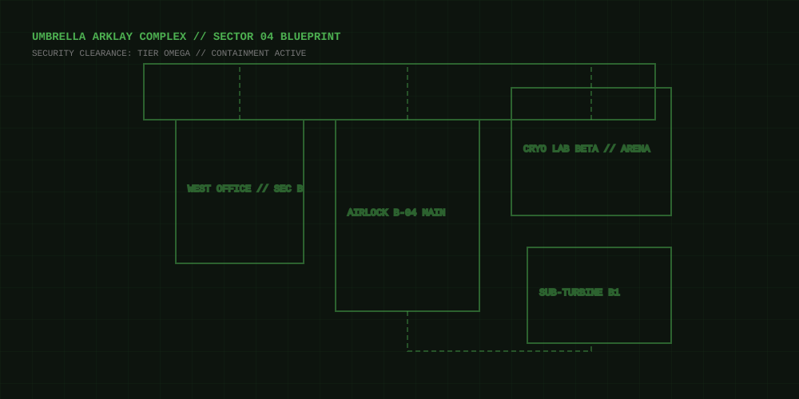

Resident Evil Requiem
1. Walkthrough & Tactical Progression Step-by-step Campaign Directives
- Infiltrate the Arklay Sector 4 Decontamination Chamber Proceed down the service corridor avoiding broken steam conduits. Search locker 04 for the standard issue 9mm Handgun and 15 rounds of hollow-point ammunition.
- Restore Auxiliary Generator Power in Sub-Level B1 Navigate through the flooded boiler room. Dispatch the two mutated research staff using focused headshots to trigger stagger frames, then flip the main breaker sequence (Switches 1, 3, and 4).
-
Decipher the Virologist's Chemical Valve Puzzle
Enter the cryogenic synthesis lab. Balance the cooling valve pressures to extract the Compound-Alpha antigen vial before the containment lockdown countdown expires.
→ [ Reveal Classified Data: Cryogenic Pressure Sequence ] CLASSIFIED PUZZLE
Valve Calibration Solution: Valves must be rotated in counter-balanced pairs to prevent nitrogen pipeline overload.
Required Equilibrium: 42.8 PSIOptimal Valve Sequence: Valve B → Valve D → Valve A → Valve CNote: Exceeding 45 seconds triggers an acidic drainage purge.
-
Acquire the Sector Security Keycard & Magnum Armament
Inspect the security chief's desk in the West Office. The hidden wall safe contains the Magnum cylinder extension and Clearance Card Level 2.
→ [ Reveal Classified Data: Chief Safe Dial Combination ] CLASSIFIED CODE
Safe Mechanism: Turn the dial slowly to prevent tumbler lockouts.
Safe Combination: Left 34 → Right 12 → Left 88Reward: Lightning Hawk .44 Magnum + 6 High-Explosive Rounds.
-
Survive the Nemesis Prototype Ambush
When the heavy blast door ruptures, do not engage in static combat. Lure the entity beneath overhead cryogenic pipes, shoot the release valves to freeze its armor plating, and sprint toward the emergency lift.
→ [ Reveal Classified Data: Nemesis Lore & Extraction Trap ] PLOT SPOILER
Host Identity: The Nemesis parasite host is revealed to be Captain Marcus from Bravo squad. Extraction orders from Umbrella command are compromised.
Emergency Override Directive: EVACUATE DIRECTLY TO ROOFTOP HELIPAD
2. Gameplay, Snapshots & Sector Map Visual Intel & Coordinate Radar
Demonstrates optimal sprint timing, cryogenic valve environmental triggers, and weak-point targeting against the Nemesis prototype.
Interactive Tactical Sector Map
Hover over glowing coordinates to inspect key reconnaissance points inside Arklay Sector 04.

3. Character Models & Biometrics Key Operatives & Biological Threats
Claire Redfield
Equipped with customized reinforced survival gear, field medical training, and high-caliber sidearms. Specializes in emergency crafting and agility-focused evasions.
Nemesis-T (Type-Requiem)
Genetically altered combat stalker driven by a cybernetically bonded NE-Alpha parasite. Possesses rapid dermal regeneration, tentacle lash strikes, and persistent tracking algorithms.
4. System Calibration Logs Target Rig & Acoustic Optimization
Hardware Calibration: RTX 3050 (6GB Mobile) / Core i7-13620H STABLE 60 FPS TARGET
Tested configuration for minimizing 1% low frame stutter and keeping VRAM utilization below the 5.8GB allocation threshold.
| Parameter | Recommended Setting | Performance Justification & Impact |
|---|---|---|
| Ray Tracing (Global Illumination / Reflections) | DISABLED (OFF) | Eliminates heavy BVH traversal latency; prevents severe 1% low FPS dips down into the 20s. |
| Texture Quality & VRAM Budget | MEDIUM (3GB Pool) | Prevents 6GB VRAM overflow which triggers severe PCIe bandwidth hitching and asset pop-in. |
| Resolution Scaling / Upscaling | DLSS // QUALITY MODE | Renders at 720p with AI reconstruction to native 1080p, delivering +28% framerate boost with sharp edges. |
| Volumetric Fog & Shadow Cache | HIGH // ENABLED | i7-13620H easily manages shadow drawcalls; caching saves GPU cycles during intense flashlight sweeps. |
| Framerate Cap / Reflex Low Latency | 60 FPS // ON + BOOST | Ensures smooth frame pacing while maintaining instantaneous trigger response for evasion parries. |
Acoustic Calibration: boAt Rockerz (FxSound / Sound Blaster EQ) FOOTSTEP ENHANCED PROFILE
Custom frequency equalization curve tailored for boAt Rockerz Bluetooth/Aux gaming headsets to enhance enemy spatial audio while dampening fatiguing sirens.
| Frequency Band | Gain Offset | Acoustic Role in Resident Evil |
|---|---|---|
| 125 Hz (Low-End Punch) | +4.5 dB | Elevates damp boot footsteps, floor creaks, and subtle heavy breathing of stalkers behind walls. |
| 250 Hz - 500 Hz (Lower Mids) | +1.0 dB | Enriches radio communications and adds tactile body to pistol and magnum discharges. |
| 2 kHz - 4 kHz (Presence & Details) | +2.5 dB | Clarifies glass shards crunching, door latch unlocks, and metallic item drop cues. |
| 8 kHz - 12 kHz (High-End Treble) | -3.5 dB | Cuts harsh piercing frequencies from facility emergency alarm sirens to prevent listener fatigue. |
| Surround Spatializer (FxSound) | LEVEL 65% | Expands soundstage width, providing accurate 360-degree positional orientation for Nemesis roars. |